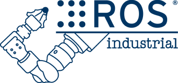
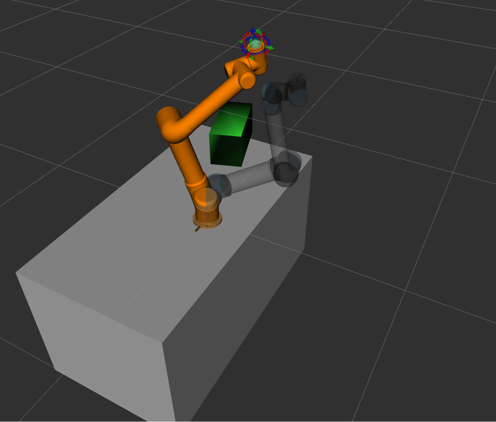

layout: true <div class="header"><p></p></div> <div class="footer"><img src="https://www.ipa.fraunhofer.de/content/dam/ipa/ipa.svg" /><p>© Fraunhofer IPA</p></div> <div class="triangle"></div> --- class: center, middle name: main_title # MOVEIT 2 – MOTION PLANNING IN PRACTICE ### Planners, IK, constraints, planning scene and ACM Every topic has a runnable example in C++ (`mgi_*`) and Python (`py_*`): [github.com/ROS-Industrial-Session-Common/moveit_examples](https://github.com/ROS-Industrial-Session-Common/moveit_examples) --- class: dense, small-code ## Anatomy of a planning request .cols[ .fifty[ ```text moveit_msgs/MotionPlanRequest group_name "ur_arm" start_state current state (default) or any state goal_constraints[] joint / pose / named goal path_constraints must hold along the whole path pipeline_id "ompl", "pilz_industrial_motion_planner", ... planner_id "RRTConnect", "LIN", ... allowed_planning_time seconds num_planning_attempts parallel attempts, best one kept max_velocity_scaling_factor 0.0 – 1.0 max_acceleration_scaling_factor 0.0 – 1.0 ``` **Response:** a `RobotTrajectory` + an **error code** (`SUCCESS`, `PLANNING_FAILED`, `NO_IK_SOLUTION`, `START_STATE_IN_COLLISION`, `GOAL_IN_COLLISION`, `TIMED_OUT`, ...) ▶ Examples `01_named_goal`, `02_joint_goal`, `03_pose_goal` ] .fifty[ #### Goal types (all become constraints) | Goal | MoveGroupInterface | MoveItPy `set_goal_state(...)` | |------|--------------------|----------| | Named state | `setNamedTarget("home")` | `configuration_name="home"` | | Joint values | `setJointValueTarget(q)` | `robot_state=state` | | Pose | `setPoseTarget(pose, tip)` | `pose_stamped_msg=pose, pose_link=tip` | | Constraints | `setPathConstraints(c)` (path) | `motion_plan_constraints=[c]` | - A **pose goal** is solved by the planner: it samples IK solutions of the goal region - Joint goals are the most predictable: no IK, no redundancy ] ] --- class: dense ## Planners | Planner | Type | Strengths | Weaknesses | Use for | |---------|------|-----------|------------|---------| | **OMPL** (RRTConnect by default) | Sampling-based | Finds a way around obstacles; fast in free space; many algorithms (RRT\*, PRM, BiTRRT, …) | Random: different path each run, often not direct | General collision-free motions | | **Pilz industrial** PTP / LIN / CIRC | Analytic, industrial | Deterministic, predictable; straight lines and arcs; trapezoidal velocity profile | **No obstacle avoidance**; LIN fails if a joint limit (velocity, acceleration) is violated along the line | Approach / retreat, Cartesian moves, motion sequences | | **CHOMP** | Gradient-based optimization | Smooth paths, keeps a distance to obstacles | **Joint goals only**; local minima; tuning | Smoothing, short motions | | **STOMP** | Stochastic optimization | Smooth paths, no gradients needed, custom cost functions | Slower; parameter tuning | Smooth paths with costs | - Each planner library is a **pipeline** (`<name>_planning.yaml`); all loaded pipelines are available at the same time - Pipelines can **chain** planners: `planning_plugins: [ompl_interface/OMPLPlanner, chomp_interface/CHOMPPlanner]` → CHOMP smooths the OMPL result (each planner gets the previous solution as reference) ▶ Example `04_planners`: same joint goal with OMPL, PTP, CHOMP, STOMP, then a vertical Pilz LIN --- class: dense, small-code ## Choosing a pipeline and a planner .cols[ .fifty[ ```cpp // MoveGroupInterface arm.setPlanningPipelineId("pilz_industrial_motion_planner"); arm.setPlannerId("LIN"); // PTP, LIN, CIRC arm.setMaxVelocityScalingFactor(0.1); // Pilz checks the joint limits ``` ```python # MoveItPy: named plan requests from moveit_py.yaml params = PlanRequestParameters(robot, "pilz_lin") arm.plan(single_plan_parameters=params) # several pipelines in parallel, the best solution is returned multi = MultiPipelinePlanRequestParameters( robot, ["ompl_rrtc", "pilz_ptp", "stomp_planner"]) arm.plan(multi_plan_parameters=multi) ``` ▶ `mgi_04_planners`, `py_04_planners` ] .fifty[ ```yaml # <pipeline>_planning.yaml (Jazzy format) planning_plugins: - ompl_interface/OMPLPlanner request_adapters: - default_planning_request_adapters/ResolveConstraintFrames - default_planning_request_adapters/ValidateWorkspaceBounds - default_planning_request_adapters/CheckStartStateBounds - default_planning_request_adapters/CheckStartStateCollision response_adapters: - default_planning_response_adapters/AddTimeOptimalParameterization - default_planning_response_adapters/ValidateSolution - default_planning_response_adapters/DisplayMotionPath ``` - OMPL planner ids in Jazzy: `RRTConnect`, `RRTstar`, `PRM`, … (empty: default of the group) - Humble: `planning_plugin` (single) and `request_adapters` as one string - MoveItPy: do not name a plan request `chomp` or `ompl`: these are the pipeline namespaces ] ] --- class: dense, small-code ## Inverse kinematics .cols[ .fifty[ | Solver | Type | Notes | |--------|------|-------| | **KDL** | Numerical (Jacobian) | Default; one solution near the seed; struggles near limits | | **pick_ik** | Numerical + global search | Fast; tunable costs; position-only IK; good for 7-DoF | | **TRAC-IK** | Numerical, two solvers in parallel | Higher success rate than KDL | | **IKFast** | Analytic, generated C++ | All solutions, very fast; generated per robot | - Chosen **per group** in `kinematics.yaml` (`kinematics_solver: pick_ik/PickIkPlugin`) - A 6-DoF arm has up to 8 IK solutions per pose: a numerical solver returns **one**, depending on the seed ] .fifty[ ```cpp // MoveGroupInterface client: ask move_group auto request = std::make_shared<moveit_msgs::srv::GetPositionIK::Request>(); request->ik_request.group_name = "arm"; request->ik_request.ik_link_name = "gripper_tcp"; request->ik_request.pose_stamped = pose_goal; request->ik_request.avoid_collisions = true; auto response = ik_client->async_send_request(request).get(); // /compute_ik ``` ```python # MoveItPy: kinematics plugins loaded in-process state = copy.deepcopy(scene.current_state) # seed state.set_from_ik("arm", pose_in_model_frame, "gripper_tcp", 0.1) arm.set_goal_state(robot_state=state) # now a joint goal ``` Client-side `setFromIK` in C++ needs the kinematics parameters in your node. ▶ `mgi_05_inverse_kinematics`, `py_05_inverse_kinematics` ] ] --- class: dense, small-code ## Constraints .cols[ .fifty[ ```cpp moveit_msgs::msg::OrientationConstraint ocm; ocm.link_name = tip_link; ocm.header.frame_id = start.header.frame_id; ocm.orientation = start.pose.orientation; // keep it ocm.absolute_x_axis_tolerance = 0.15; // rad ocm.absolute_y_axis_tolerance = 0.15; ocm.absolute_z_axis_tolerance = 3.14; // free around the tool axis ocm.weight = 1.0; moveit_msgs::msg::Constraints path; path.orientation_constraints.push_back(ocm); arm.setPathConstraints(path); // MoveItPy: arm.set_path_constraints(path) arm.setPlanningTime(15.0); // ... plan, execute ... arm.clearPathConstraints(); // settings persist! ``` ▶ `mgi_06_path_constraints`, `py_06_path_constraints` ] .fifty[ #### Types - `JointConstraint`: joint value ± tolerances - `PositionConstraint`: a link stays inside a region - `OrientationConstraint`: orientation ± tolerance per axis - `VisibilityConstraint`: a sensor keeps a target in view **Goal** constraints say where to end; **path** constraints must hold all along the motion. #### OMPL and path constraints - Default: random samples are **rejected** until they satisfy the constraint → slow, often timeouts - Free the axes you do not care about (here: rotation around the tool) - Per group in `ompl_planning.yaml`: `enforce_constrained_state_space: true` + `projection_evaluator`, or `enforce_joint_model_state_space: true` - Or Pilz LIN: a straight line keeps the orientation by construction ] ] --- class: dense, small-code ## Cartesian paths .cols[ .sixty[ ```cpp // MoveGroupInterface std::vector<geometry_msgs::msg::Pose> waypoints; // down, sideways, up // ... moveit_msgs::msg::RobotTrajectory trajectory; const double eef_step = 0.01; // IK every 1 cm double fraction = arm.computeCartesianPath(waypoints, eef_step, trajectory); if (fraction > 0.99) arm.execute(trajectory); ``` ```python # MoveItPy: no computeCartesianPath # A. Pilz LIN, one straight line per waypoint arm.plan(single_plan_parameters=PlanRequestParameters(robot, "pilz_lin")) # B. /compute_cartesian_path service of move_group (moveit_msgs/srv/GetCartesianPath), # then RobotTrajectory.set_robot_trajectory_msg() + apply_totg_time_parameterization() ``` ▶ `mgi_07_cartesian_path`, `py_07_cartesian_path` ] .forty[ - The tip follows **straight lines** between the waypoints: IK at every step - Returns the **fraction** of the path that could be computed: always check it - Collision-checked (`avoid_collisions = true` by default) - No obstacle avoidance: the line is fixed - Jazzy: the `jump_threshold` argument is deprecated - Pilz LIN instead: with a velocity profile, but it fails if the line needs joint accelerations above the limits (e.g. wrist rotations near singularities) ] ] --- class: dense, small-code ## Planning scene: objects .cols[ .sixty[ ```cpp // MoveGroupInterface: PlanningSceneInterface (messages to move_group) moveit_msgs::msg::CollisionObject box; box.header.frame_id = "base_link"; box.id = "obstacle"; box.primitives.push_back(primitive); // BOX, SPHERE, CYLINDER, ... or meshes box.primitive_poses.push_back(pose); box.operation = box.ADD; // REMOVE, MOVE, APPEND scene.applyCollisionObject(box); // blocking; addCollisionObjects(): async ``` ```python # MoveItPy: direct access to the scene of this process with robot.get_planning_scene_monitor().read_write() as scene: scene.apply_collision_object(box) scene.current_state.update() ``` ▶ `mgi_08_planning_scene`, `py_08_planning_scene` ] .forty[ <p></p> - Objects can have **subframes** (e.g. a screw hole) usable as goal frames - Sensors add an **Octomap** to the same scene - With obstacles, OMPL paths sometimes fail `ValidateSolution`: plan again ] ] --- class: dense, small-code ## Attaching and detaching objects .cols[ .fifty[ ```cpp moveit_msgs::msg::AttachedCollisionObject attached; attached.link_name = tip_link; attached.object.id = "part"; // existing world object attached.object.operation = attached.object.ADD; attached.touch_links = touch_links; // gripper, flange scene.applyAttachedCollisionObject(attached); // blocking // ... move: the part moves with the robot ... attached.object.operation = attached.object.REMOVE; // detach scene.applyAttachedCollisionObject(attached); ``` ```python with psm.read_write() as scene: scene.process_attached_collision_object(attached) ``` ▶ `mgi_09_attach_detach`, `py_09_attach_detach` ] .fifty[ - The attached object becomes part of the robot: it moves with the link and is checked against the world - **touch links**: robot links allowed to touch it (gripper, flange) - `arm.attachObject(id, link, touch_links)` exists too, but is **asynchronous** (topic): the next plan can start before it is applied - After detaching, the object still touches the gripper: the next plan starts in collision → retreat with the contacts allowed (ACM, or MTC) - Typical pick: approach → allow contact → close → **attach** → lift → … → open → **detach** → retreat: what the **Task Constructor** automates (deck 5) ] ] --- class: dense, small-code ## Allowed Collision Matrix (ACM) .cols[ .fifty[ - A table of **pairs** (robot links, world objects): "collision allowed: yes / no" - Allowed pairs are **not checked** → faster, and contact is permitted - Defaults from the **SRDF** (`disable_collisions` of the Setup Assistant); attached objects: their touch links - Change it at runtime when contact is wanted: fingers on a part, tool on a workpiece, object on the table ```python # MoveItPy: edit the ACM of the scene with psm.read_write() as scene: acm = scene.allowed_collision_matrix for link in touch_links: acm.set_entry("part", link, True) ``` ▶ `mgi_10_allowed_collision_matrix`, `py_10_...`: planning fails with *start state in collision* until the contacts are allowed ] .fifty[ ```cpp // C++ with move_group: read the ACM, edit it, send a diff auto request = std::make_shared<moveit_msgs::srv::GetPlanningScene::Request>(); request->components.components = moveit_msgs::msg::PlanningSceneComponents::ALLOWED_COLLISION_MATRIX; auto response = get_scene_client->async_send_request(request).get(); collision_detection::AllowedCollisionMatrix acm( response->scene.allowed_collision_matrix); for (const auto& link : touch_links) acm.setEntry("part", link, true); moveit_msgs::msg::PlanningScene diff; diff.is_diff = true; acm.getMessage(diff.allowed_collision_matrix); scene.applyPlanningScene(diff); ``` .note[Undo it after the motion: a permanently allowed pair hides real collisions.] ] ] --- class: dense ## When planning fails | Error / log | Usual cause | What to check | |------------|-------------|---------------| | `START_STATE_IN_COLLISION` (`CheckStartStateCollision`) | Robot touches an object or itself | Contacts listed in the `move_group` log; ACM, attached objects, SRDF collision pairs | | `NO_IK_SOLUTION` | Pose not reachable, or IK timeout too short | Pose frame and orientation, reachability, `kinematics.yaml` | | `INVALID_GOAL_CONSTRAINTS` | Goal type not supported (e.g. CHOMP + pose goal) | Planner capabilities | | `INVALID_MOTION_PLAN` (`ValidateSolution`) | Path clips an obstacle between collision checks | Plan again; smaller `longest_valid_segment_fraction` | | `PLANNING_FAILED` / `TIMED_OUT` | Narrow passage, hard constraints, Pilz limit violation | Planning time, tolerances, scaling factors, another planner | | Controller rejects the goal | Trajectory and controller settings differ | Controller log (e.g. `allow_nonzero_velocity_at_trajectory_end`), names, tolerances | - Reproduce the request in **RViz MotionPlanning** (same `move_group`): see the scene and the start/goal states - Read the `move_group` log: pipeline, planner, failing adapter, contacts - Start simple: named state → joint goal → pose goal → constraints